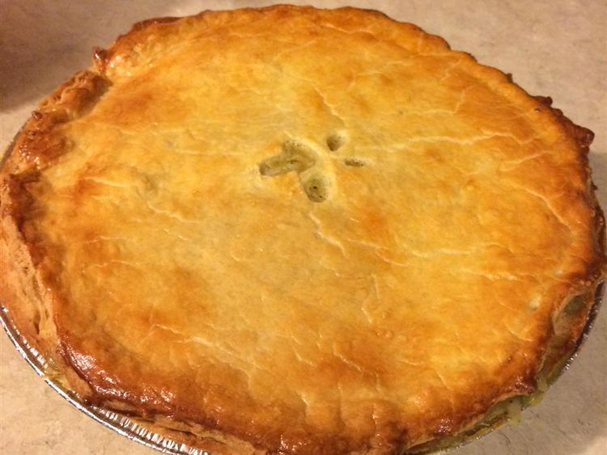

Steak Pie

Description
This recipe was created by trying to copy a steak pie made at the 'Butt and Ben' Scottish Bakery in Pickering, Ontario.
My husband says it's better! You could also add 2 calf kidneys (well washed and de-veined and cut into bite sized pieces) to make Steak and Kidney Pie!
Ingredients
- 1 tablespoon vegetable oil
-
1 pound cubed beef stew meat
-
1 large onion, chopped
-
1 (1 ounce) package dry mushroom gravy mix
-
1 cup water
-
1 teaspoon Worcestershire sauce
-
1 pinch salt and pepper to taste
-
1 sheet frozen puff pastry, thawed
- 1 egg
-
1 tablespoon water
Steps
- Heat the oil in a large skillet over medium-high heat. Add beef stew meat, and cook until browned on the outside. Add the onion; cook and stir until tender, about 5 minutes. Stir in the mushroom gravy mix and 1 cup of water. Season with Worcestershire sauce, salt, and pepper. Turn heat to low, and simmer for 20 to 30 minutes.
- Preheat the oven to 400 degrees F (200 degrees C). Transfer the beef mixture to a casserole dish. Roll out the puff pastry to cover the top of the casserole dish. Press edges onto the rim of the dish to seal. Whisk together the egg and 1 tablespoon of water in a small cup using a fork. Brush over the top of the pastry.
- Bake for 20 minutes in the preheated oven, until the pastry is puffed and golden brown.